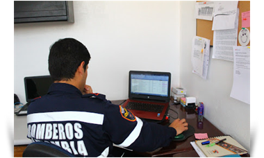
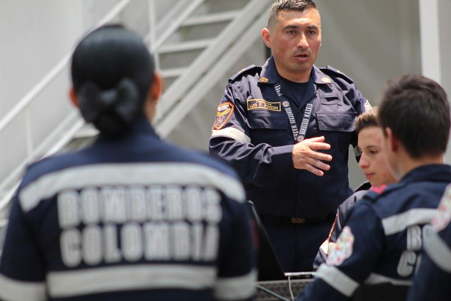

Somos un departamento dentro de la institución, conformado por un grupo de inspectores que se
encargan de coordinar, planear, ejecutar y evaluar todos los procesos de inspeccion que se dan en el municipio de Madrid,Cundinamarca.
Ya sea pequeños negocios,medianas empresas o grandes empresas.
La ley 1575 como marco legal y fundamento de nuestro actuar, ha sido reglamentada mediante
diferentes resoluciones, que se convierten para nosotros en la carta de navegación,
permitiéndonos como bomberos de Colombia el ofrecer garantías de calidad en las inspecciones brindadas.
diferentes resoluciones, que se convierten para nosotros en la carta de navegación,
permitiéndonos como bomberos de Colombia el ofrecer garantías de calidad en las inspecciones brindadas.
¿Como solicitar la cita para la inspeccion tecnica?
1- Dar Click en (Descargar formato).
2- Diligenciar el formulario,(esfero negro, letra legible).
3- Escanear el formulario.
4- Enviar el formulario diligenciado al correo de bomberos Madrid.
inspeccionesycapacitacionesb31@gmail.com
2- Diligenciar el formulario,(esfero negro, letra legible).
3- Escanear el formulario.
4- Enviar el formulario diligenciado al correo de bomberos Madrid.
inspeccionesycapacitacionesb31@gmail.com
Instrucciones
Nuestra institución y su responsabilidad en la gestión del riesgo
contra incendio
Los bomberos de Colombia, tienen la responsabilidad fundamental de promover la gestión del riesgo contra incendios, esto según lo estipulado en el artículo 2° de la ley 1575 de 2012.
Siendo consecuentes con lo estipulado en la ley, el cuerpo de bomberos de Madrid Cundinamarca,
realiza labores de inspección de seguridad humana en establecimientos de comercio, así como también la capacitación a las brigadas contra incendio, siendo este pilar fundamental en el desarrollo sostenible y normal de las actividades de una empresa.
Para tal fin el cuerpo de bomberos debe crear un departamento de capacitaciones, el cual se
encargará de todos los procesos académicos tanto al interior como al exterior de la institución
bomberíl.
contra incendio
Los bomberos de Colombia, tienen la responsabilidad fundamental de promover la gestión del riesgo contra incendios, esto según lo estipulado en el artículo 2° de la ley 1575 de 2012.
Siendo consecuentes con lo estipulado en la ley, el cuerpo de bomberos de Madrid Cundinamarca,
realiza labores de inspección de seguridad humana en establecimientos de comercio, así como también la capacitación a las brigadas contra incendio, siendo este pilar fundamental en el desarrollo sostenible y normal de las actividades de una empresa.
Para tal fin el cuerpo de bomberos debe crear un departamento de capacitaciones, el cual se
encargará de todos los procesos académicos tanto al interior como al exterior de la institución
bomberíl.
¿Quienes somos?
¿Como lo hacemos?


CUERPO DE BOMBEROS DE MADRID CUNDINAMARCA
bomberosmadridb31@gmail.com
Teléfono: 7470306
Cel: 3213800353
Teléfono: 7470306
Cel: 3213800353
CONTACTO EMERGENCIAS